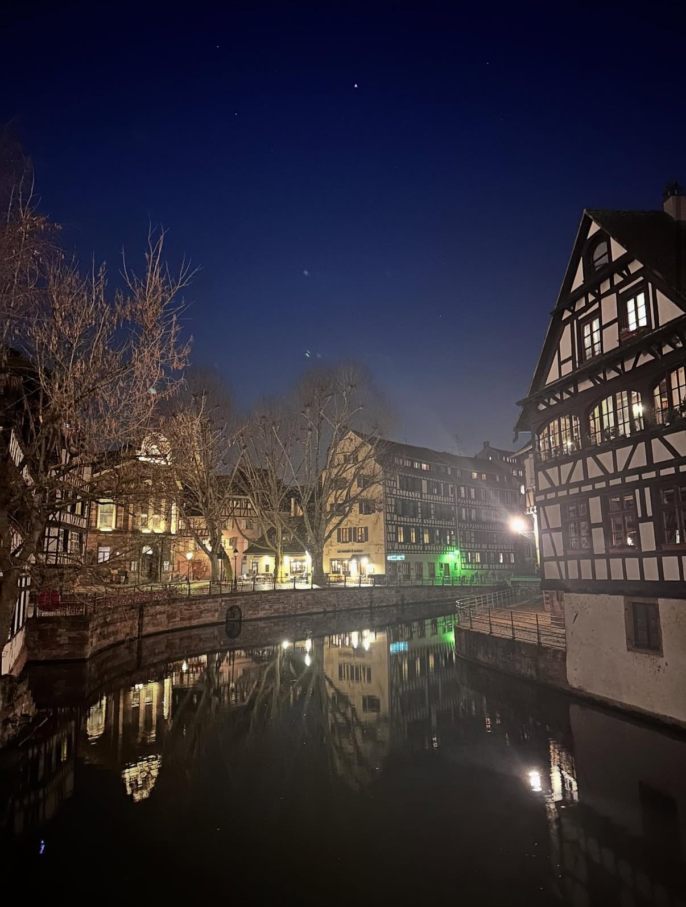

Travel
長期休みになると必ず旅行に行くほどの旅行好きです。国内外問わず色々なところに行っています。このページでは私が今まで行って特に良かった場所や印象に残ったところを紹介します。
右の写真は韓国の水原市にある「ピョルマダン図書館」です。

長期休みになると必ず旅行に行くほどの旅行好きです。国内外問わず色々なところに行っています。このページでは私が今まで行って特に良かった場所や印象に残ったところを紹介します。
右の写真は韓国の水原市にある「ピョルマダン図書館」です。

スウェーデンの首都、ストックホルムです。私の大好きなアーティストであるヨルシカのアルバム「だから僕は音楽を辞めた」のジャケットの撮影地となっている場所です。
私はスウェーデンでは、ストックホルム、ルンド、ゴットランド島に行きましたが街の雰囲気や人当たりの良さを振り返るとストックホルムが一番印象に残っています。

中国最大の経済都市、上海です。街の至る所に監視カメラが設置されていたり、地下鉄に乗る度に改札で保安検査をしなければいけなかったり、日本とはかなり違うと感じた場所でした。ですがそれのおかげで都市の治安はとてもよく快適に過ごせました。
物価も日本より少し安いぐらいに感じましたし、本場の炒飯はとても美味しかったです。

日本国内も色々な場所を訪れましたが、私が最も気に入っている都道府県は北海道です。札幌、小樽、旭川、函館など色々な場所の中でも小樽が一番のお気に入りです。
また余市町という小さな街にある「余市蒸留所」にも今年行きました。ウイスキーが好きなので次は長野県の「白州蒸留所」に行くことが目標です。

ドイツとの国境付近にある都市ストラスブールです。首都であるパリももちろん素晴らしかったですが、街の雰囲気や人の温かさがすごく印象に残っている街です。フランスといえばパリというイメージが持たれがちですが、すごく綺麗な街なので是非行ってみてください。
